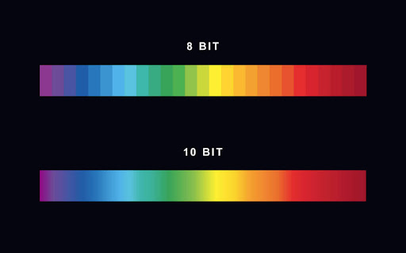
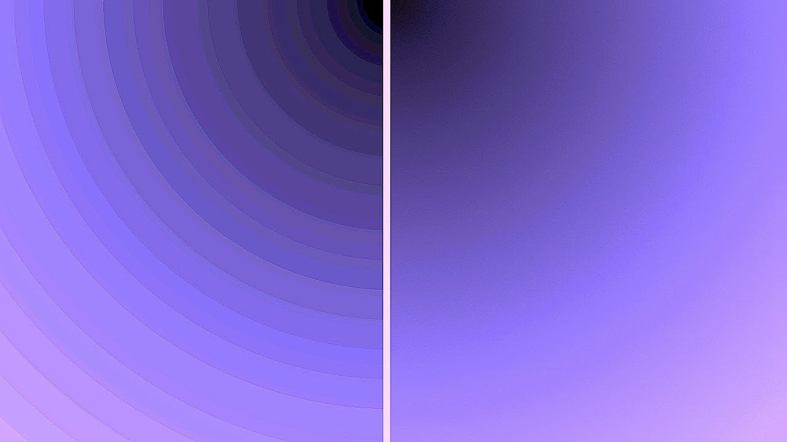
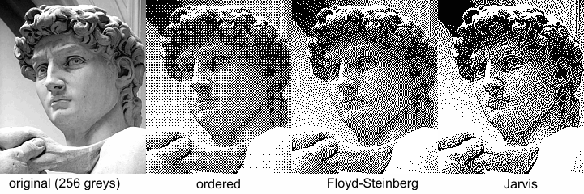

La profundidad de color es la cantidad de información de color disponible por cada pixel dentro de una imagen y se mide en bits. Es decir, mientras más bits de información exista, mayor será la cantidad de colores disponibles.
También se le conoce como profundidad de bits, ya que es un dígito binario compuesto por un valor de 0 a 1.
Mientras mayor sea la información de color dentro de una imagen, la imagen será más nítida, precisa y mejor representada que una que tenga poca profundidad de color. Sin embargo, mientras más información de color contenga una imagen, mayor peso va a tener. Por lo que no siempre tendremos que tener imágenes en 24 bits, ya que podrían ser muy pesadas para cargar, por ejemplo, en una página web.
La cantidad de colores disponibles por cada paso de profundidad es exponencial, como se puede apreciar en el siguiente ridículo gráfico:
La diferencia entre una profundidad de color de 16 bits y una de 24 bits es enorme y nos sirve para comprender la siguiente pregunta:
Una gradiente requiere de una buena cantidad de colores para que la transición entre un color y otro no sea tan abrupta. Cuando una imagen tiene una profundidad de color baja, se produce algo llamado banding, que hace muy obvia la separación entre colores dentro de una gradiente.
El banding genera esta especie de "bandas" que hacen que la lectura de una imagen pueda verse dificultosa. Puede causarse tanto por la compresión de una imagen como por una profundidad de color limitada.
También suele solucionarse con una técnica llamada dithering, que crea una transición falsa entre estos colores para simular una gradiente más suave.
Así que ahora lo sabes. Si no quieres que tus gradientes se vean feas, intenta aumentar la profundidad de color con la que trabajas o añadir dithering, por si aún quieres ahorrar esos preciados bytes de tamaño en tu imagen.